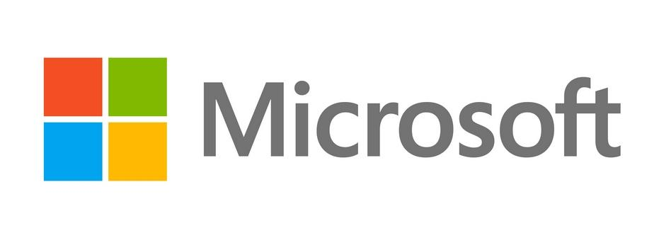

start |
biografie |
bekend door |
filmpje |
contact |
hij werd bekend door microsoft

microsoft is een Amerikaans bedrijf uit Redmond in Washington.het is s`werelds grootste softwarebedrijf
microsoft is opgericht op 4 april 1975.
hoe het exact is opgericht zie je in de biografie van bill gates.